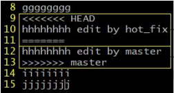

Git 命令行操作
1 本地库初始化
git init
执行后生生成一个隐藏文件夹 .git ，该目录存放的是本地库相关的子目录和文件，不要删除，也不要胡乱修改
2 设置签名
作用：区分不同开发人员的身份
辨析：这里设置的签名和登录远程仓库（代码托管中心）的账号、密码没有任何关系。
项目/仓库级别
仅在当前本地库范围内有效，信息保存位置：.git/config 文件
git config user.name molln
git config user.email molln@molln.com
系统用户级别
登录当前操作系统的用户范围，信息保存位置：用户根目录/.gitconfig 文件
git config --global user.name molln
git config --global user.email molln@molln.com
2.3 优先级
就近原则：项目级别优先于系统用户级别，二者都有时采用项目级别的签名
如果只有系统用户级别的签名，就以系统用户级别的签名为准
二者都没有不允许
3 基本操作
3.1 状态查看
git status
查看工作区，暂存区状态
3.2 添加
git add [filename]
将工作区的 新建/修改 提交至暂存区
3.3 提交
git commit -m "First Commit" [filename]
将暂存区的内容提交到本地库
3.4 查看历史记录
git log
git log --pretty=oneline
git log --oneline
git reflog
HEAD@{移动到当前版本需要多少步}
3.5 前进后退
本质：移动 HEAD 指针
基于索引值操作[推荐]
git reset --hard [局部索引值]
使用 ^ 符号：只能后退
git reset --hard HEAD^
一个^表示后退一步，n 个表示后退 n 步
使用 ~ 符号：只能后退
git reset --hard HEAD~N
表示后退 n 步
3.6 reset 命令的三个参数对比
--soft
在本地库移动HEAD指针
--mixed
在本地库移动HEAD指针
重置暂存区
--hard
在本地库移动HEAD指针
重置暂存区
重置工作区
3.7 删除文件并找回
前提：删除前，文件存在时的状态提交到了本地库
操作：git reset --hard [指针位置]
- 删除操作已提交至本地库：指针位置指向历史记录
- 删除操作未提交至本地库：指针位置使用 HEAD
3.8 比较文件差异
git diff [文件名]
将工作区中的文件和暂存区进行比较
git diff [本地库历史版本] [文件名]
将工作区中的文件和本地库历史记录比较
不带文件名，比较多个文件
4 分支管理
4.1 什么是分支
在版本控制过程中，使用多条线同时推进多个任务

4.2 分支的好处
同时并行推进多个功能开发，提高开发效率
各个分支在开发过程中，如果某一分支开发失败，不会对其它分支有任何影响。失败的分支删除重新开始即可。
4.3 分支操作
（1）创建分支
git branch [分支名]
（2）查看分支
git branch -v
（3）切换分支
git checkout [分支名]
（4）合并分支
第一步：切换到接收修改的分支
git checkout [接收修改的分支]
第一步：执行 merge 命令
git merge [有修改的分支]
（5）解决冲突
冲突表现

冲突解决
编辑文件，删除特殊符号
修改文件至满意程度
git add [文件名]
git commit -m "提交说明"
此时 commit 一定不能带具体文件名
（6）删除分支
git branch -D hot_fix